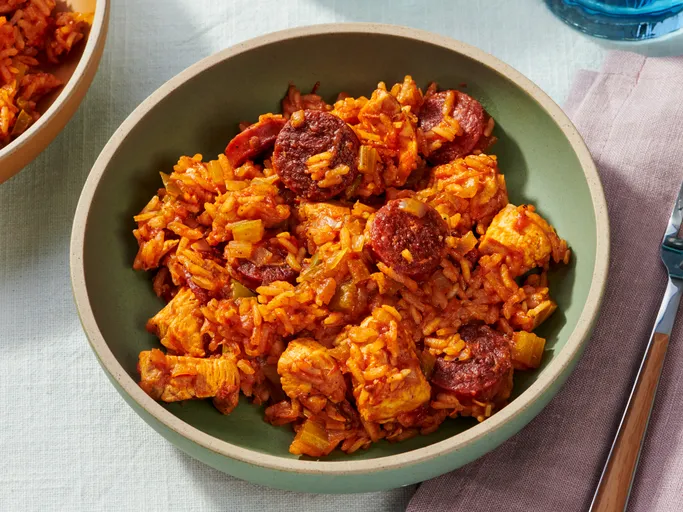

Home
Jambalaya

Description
This jambalaya recipe makes a hearty, flavorful, and oh-so satisfying
one-pot meal with just the right amount of heat. The
Allrecipes
community can't get enough of this top-rated jambalaya recipe — it has
earned more than 1,000 rave reviews from happy home cooks.
Jambalaya is a one-pot dish that's made with rice, meat or seafood, and
vegetables. With French and Spanish influences, jambalaya is quite similar
to paella. The name "jambalaya" likely comes from the Provençal word
"jambalaia," which means mishmash. Like many Cajun and Creole foods,
jambalaya starts with the Cajun holy trinity: a flavor base of onion, bell
peppers, and celery.
Jambalaya Ingredients
These are the ingredients you'll need to make the best jambalaya of your
life:
- Oil: Chicken and andouille sausage are sautéed in peanut oil.
-
Sausage: Opt for andouille sausage for the most authentic jambalaya.
-
Chicken: Cut one pound of boneless, skinless chicken breasts into 1-inch
pieces.
-
Spices and seasonings: This chicken and sausage jambalaya is flavored
with Cajun seasoning, fresh garlic, red pepper flakes, salt, pepper, hot
sauce, Worcestershire sauce, and file powder.
- Vegetables: You'll need an onion, green bell peppers, and celery.
- Rice: Opt for plain white rice for this jambalaya recipe.
-
Broth: Use store-bought or homemade chicken broth to cook the rice.
Ingredients
- 2 tablespoons peanut oil, divided
- 1 tablespoon Cajun seasoning
- 10 ounces andouille sausage, sliced into rounds
- 1 pound boneless skinless chicken breasts, cut into 1-inch pieces
- 1 medium onion, diced
- 1 small green bell pepper, diced
- 2 ribs celery, diced
- 3 cloves garlic, minced
- 1 (16 ounce) can crushed Italian tomatoes
- ½ teaspoon red pepper flakes
- ½ teaspoon ground black pepper
- 1 teaspoon salt, or to taste
- ½ teaspoon hot pepper sauce
- 2 teaspoons Worcestershire sauce
- 1 teaspoon file powder
- 1 ¼ cups uncooked white rice
- 2 ½ cups chicken broth
Steps
- Gather all ingredients.
-
Heat 1 tablespoon of peanut oil in a large heavy Dutch oven over medium
heat. Season sausage and chicken pieces with Cajun seasoning. Sauté
sausage until browned. Remove with slotted spoon, and set aside.
-
Add 1 tablespoon peanut oil, and sauté chicken pieces until lightly
browned on all sides. Remove with a slotted spoon, and set aside.
-
In the same pot, sauté onion, bell pepper, celery, and garlic until
tender.
-
Stir in crushed tomatoes, and season with red pepper, black pepper,
salt, hot pepper sauce, Worcestershire sauce, and filé powder.
-
Stir in chicken and sausage. Cook for 10 minutes, stirring occasionally.
- Stir in the rice and chicken broth.
-
Bring to a boil, reduce heat, and simmer for 20 to 25 minutes, or until
liquid is absorbed.
- Serve and enjoy!